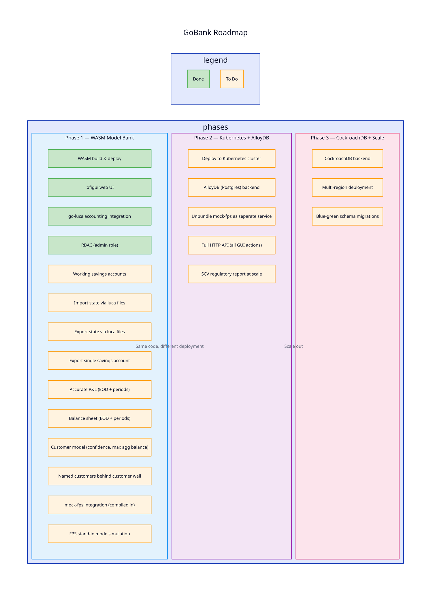

GoBank Roadmap
GoBank aims to be a realistic banking software core, validated by a simulation model. The same code runs in the browser (WASM) and in production (Kubernetes).

Phase 1 — WASM Model Bank
The browser-based model proves the banking core works end-to-end.
Done
- WASM build and deploy (statichost)
- lofigui web UI
- go-luca double-entry accounting integration
- RBAC infrastructure (admin role)
To Do
- Working savings accounts — full lifecycle: open, deposit, withdraw, accrue interest, close
- Import/export via luca files — load and save simulation state as plain-text accounting files
- Export single savings account — extract one account's history as a luca file
- Accurate P&L — end-of-day and for arbitrary periods (monthly, quarterly, annual)
- Balance sheet — end-of-day and for arbitrary periods
- Customer model — confidence score, maximum aggregate balance, realistic switching behaviour
- Named customers behind customer wall — PII-like data gated behind access control
- mock-fps integration — compiled-in Faster Payments simulator for payment processing
- FPS stand-in mode — simulate FPS outages, payment queuing, and recovery
Phase 2 — Kubernetes + AlloyDB
Same banking core, deployed as services in a Kubernetes cluster with a real database.
- Deploy to Kubernetes cluster
- AlloyDB (Postgres-compatible) backend
- Unbundle mock-fps as a separate service (HTTP API)
- Full HTTP API for all GUI actions (automation/scenario testing)
- SCV regulatory report at scale (100K+ customers)
Phase 3 — CockroachDB + Scale
Prove the core works across regions with distributed SQL.
- CockroachDB backend
- Multi-region deployment
- Blue-green schema migrations (zero-downtime data swaps)
What Success Looks Like
Phase 1 complete means: you can open the WASM demo, run a simulation, see accurate financials (P&L, balance sheet), export any account as a luca file, trigger an FPS outage, and watch the bank handle it. All actions available via API for automated testing.
Phase 2 complete means: the same code runs in Kubernetes with AlloyDB, mock-fps is a separate service, and SCV reports generate correctly at scale.
Phase 3 complete means: the bank runs across regions on CockroachDB with zero-downtime migrations.